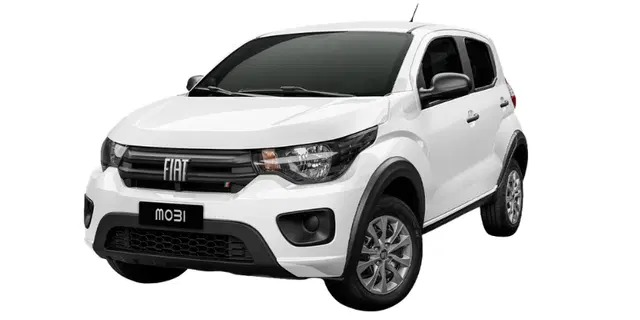
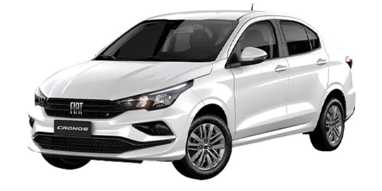
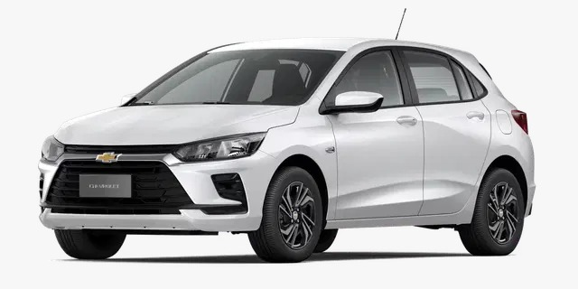
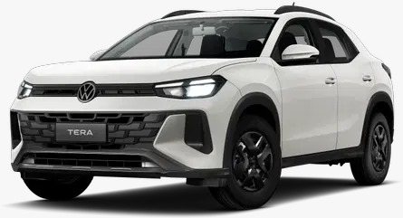
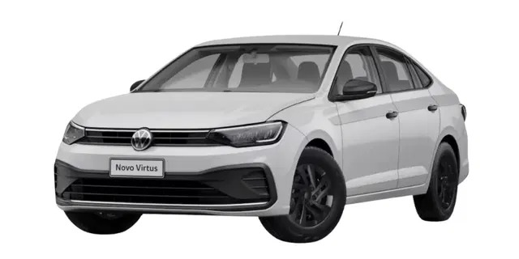
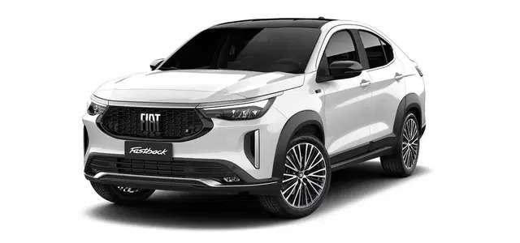
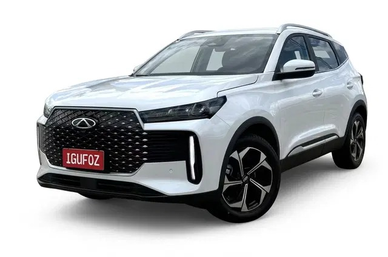
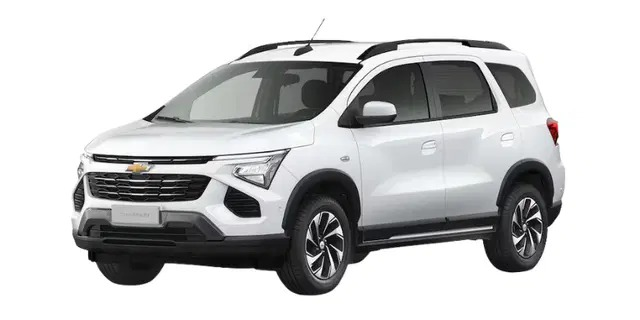

Grupo B
R$ 167,90/dia
Hatch compacto manual
Mobi, C3 ou similar. Econômico, ágil e ideal para circular pela cidade.
Locadora local em Foz do Iguaçu
Retire em Foz, viaje com segurança e conte com atendimento local para explorar a cidade, Argentina e Paraguai com Carta Verde.

Reserva rápida
Frota
Todas as opções têm ar-condicionado, direção hidráulica, multimídia e 5 ocupantes, com exceção do Grupo H, que acomoda 7 pessoas.

Mobi, C3 ou similar. Econômico, ágil e ideal para circular pela cidade.

Onix, Argo, 208, Polo ou similar. Mais espaço sem abrir mão da economia.

Cronos ou similar. Condução suave para passeios, compras e deslocamentos longos.

Onix Premier ou similar. Design moderno, conforto e tecnologia embarcada.

Tera, Pulse ou similar. Robusto e confortável para explorar a tríplice fronteira.

Virtus, Onix Plus ou similar. Mais porta-malas e conforto para família.

2008, Fastback ou similar. Versatilidade, espaço e desempenho para qualquer roteiro.

Tiggo 5x ou similar. Acabamento refinado para quem busca uma experiência superior.

Spin ou similar. Mais espaço para grupos, família grande e bagagens.
Valores de referência. Podem variar conforme período, disponibilidade, proteções e adicionais selecionados.
Diferencial IguFoz
A IguFoz emite a autorização de travessia junto com o veículo para circular em Puerto Iguazú, Ciudad del Este e Presidente Franco. Esse diferencial reduz uma das maiores dúvidas de quem visita Foz.
Perguntas frequentes
Não. Você reserva agora sem pagar nada. O pagamento acontece apenas na retirada do veículo.
CNH definitiva com pelo menos 2 anos, comprovante de residência, e-mail válido e cartão de crédito físico nominal ao titular do contrato.
Sim, com a autorização de travessia e Carta Verde emitidas junto com o carro na retirada.
É um bloqueio temporário no limite do cartão de crédito, não uma cobrança. O valor depende do grupo e da proteção contratada.
Sim, em estacionamento parceiro. O local é monitorado 24 horas, e a recomendação é registrar fotos ou vídeos na devolução.
Av. Brasil, 90, das 08h às 20h. Após as 18h, atendimento somente para clientes que chegam pelo aeroporto e fizeram reserva com pelo menos 24h de antecedência.